Paquete de R necesario para este hands-on:
if (!is.element("VennDiagram", installed.packages()[,1])){
install.packages("VennDiagram")
}
library(VennDiagram)## Loading required package: grid## Loading required package: futile.loggerif (!is.element("visualize", installed.packages()[,1])){
install.packages("visualize")
}
library(visualize)
if (!is.element("stargazer", installed.packages()[,1])){
install.packages("stargazer")
}
library(stargazer)##
## Please cite as:## Hlavac, Marek (2018). stargazer: Well-Formatted Regression and Summary Statistics Tables.## R package version 5.2.2. https://CRAN.R-project.org/package=stargazerEn este archivo encontrarán una introducción a las distribuciones estadísticas en R.
Los conceptos teóricos, las definiciones y las fórmulas de cada distibución ya fueron explicadas en clase. El objetivo de este hands-on es aplicar esos conceptos y fórmulas en el lenguaje R y hacer simulaciones para mostar empíricamente algunos de esos conceptos.
Las funciones para distribuciones de probabilidad en R se separan en 4 grandes categorías:
Vamos a guardar en un arreglo la probabilidad de que salga cada cara de un dado:
p.de.cada.cara <- rep(1/6,6)
sum(p.de.cada.cara) # check## [1] 1ncara <- 1:6
esperanza <- sum(ncara*p.de.cada.cara)
esperanza## [1] 3.5Vamos a usar la función sample() para mostrar el resultado particular de a) tirar un dado, a) tirar una moneda equilibrada y c) tirar tres veces un dado:
# función básica para tirar un dado una vez:
sample(1:6, 1)## [1] 3# función básica para tirar una moneda equilibrada:
sample(c("cara", "cruz"), 1) ## [1] "cara"# función básica para tirar un dado tres veces con reposición:
sample(1:6, 3, replace = T)## [1] 2 5 5Vamos a mostrar, empíricamente, que la VA X = “Resultado de lanzar un dado” es equiprobable:
# cantidad de veces que vamos a tirar el dado:
nsample<-1000
# voy a tirar "nsample" dados:
samples<-sample(ncara, size=nsample, prob=p.de.cada.cara, replace=T)
freqs<-table(samples)
freqs## samples
## 1 2 3 4 5 6
## 165 162 156 161 172 184lbls = sprintf("%0.1f%%", freqs/sum(freqs)*100)
barX <- barplot(freqs, ylim=c(0,250))
text(x=barX, y=freqs+10, label=lbls)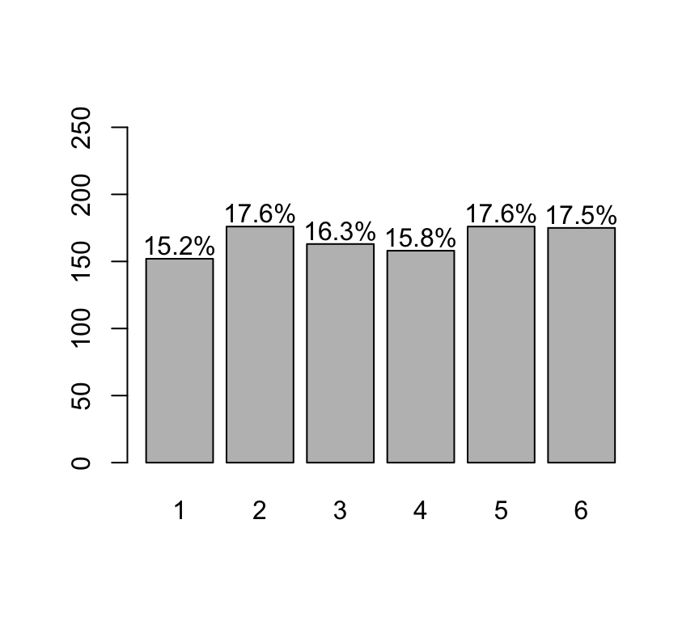
De la tabla de frecuencia y/o del barplot se observa que todas las caras de los dados tienden a salir un nro de veces similar.
Ejercicio:
Un bolillero para un examen tiene 15 bolillas.
Suponga que el examen consiste en explicar 3 bolillas estraídas del bolillero. Simule la generación de los tres temas que le tocaría a un alumno al azar.
Muestre, a través de una simulación, que la probabilidad de que un alumno saque un tema es la misma para todos los temas.
Nota: Resuelto al final del hands-on
Vamos a mostrar que la esperanza de tirar un dado muchas veces es 3.5: (o sea, vamos a mostrar empíricamente el valor de la esperanza)
1° Tiraremos el dado 10.000 veces y vamos a calcular la media de esas 10000 veces:
mean(sample(1:6, 10000, replace = T))## [1] 3.52542° Vamos a repetir muchas veces el experimento de tirar “n” veces un dado. A cada experimento lo vamos a llamar “muestra de la población”. Y vamos a mostrar que la media de todas las muestras sigue una distribución normal:
# La siguiente función genera la media de 1000 experimentos.
# En cada experimento tiro "n" veces el dado
generate.sample.means <- function(n) {
sample.means <- numeric()
for (i in 1:1000) {
sample.means <- append(sample.means,
sum(sample(ncara, size=n, prob=p.de.cada.cara, replace=T))/n)
}
return (sample.means)
}
sample.means <- generate.sample.means(100)
plot(density(sample.means),
main="Distribución de la media",xlab="media de los experimentos",
col="orange")
x = seq(3,4,0.01)
# función de densidad teórica para una media de 3.5 y un sd de 0.1707825.
mimean<-mean(sample.means)
misd<-sd(sample.means)
# comparamos el desvío standard teórico contra el empírico:
sqrt(sum( (1:6-3.5)^2 ) / 6) / sqrt(100)## [1] 0.1707825misd ## [1] 0.1662789lines(x=x,y=dnorm(x,mean=mimean,sd=misd), col=rgb(0x33,0x66,0xAA,0x90,maxColorValue=255), type="l", lty=2)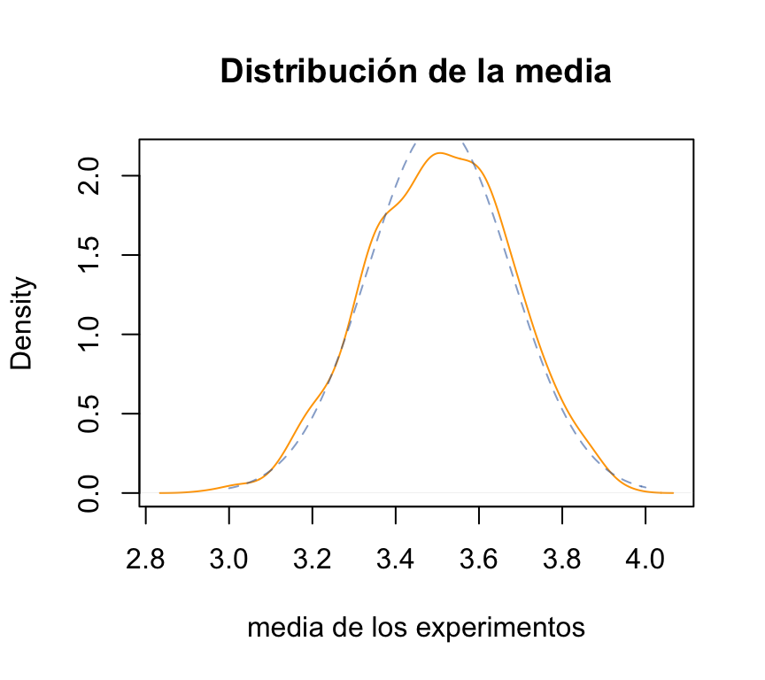
La gráfica anterior muestra las dos distribuciones: la empírica (punteada) y la teórica (continua). Lógicamente la función empírica “se aproxima” a la función teórica y no es perfecta.
Siguiendo la simulación anterior…
En la medida que agrandamos el “n” (100, en este caso) => la media empírica tiende a parecerse más a la media poblacional! A esto se le llama “ley de los grandes números”:
sample.means <- generate.sample.means(100)
plot(density(sample.means), main="Distribución de las medias de las muestras", xlab="media la muestra", col="yellow", xlim=c(3.2,3.8), ylim=c(0,8))
sample.means <- generate.sample.means(500)
lines(density(sample.means), col="orange")
sample.means <- generate.sample.means(1000)
lines(density(sample.means), col="red")
legend(3.6,7,c("n=100","n=500","n=1000"), fill=c("yellow", "orange", "red"))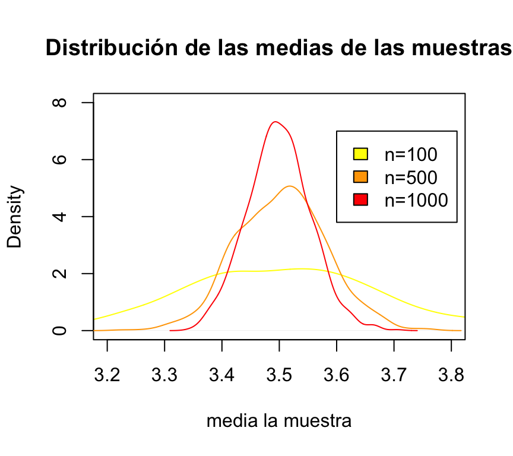
Ejercicio 3.4 “Lanzamiento de dado”: Se lanza un dado de 6 caras (no cargado) 10 veces.
#x: numero de exitos
exitosE <- c(0,1)
#size: numero de ensayos
ensayosBinom <- 10
#prob: probabilidad de exito
probabilidadBinom <- 1/6Podemos representar fácilmente la función de probabilidad de esta distribución binomial:
plot(dbinom(0:10,ensayosBinom,probabilidadBinom),type="h",xlab="k",ylab="P(X=k)",main="Función de Probabilidad")También podemos representar su función de distribución:
plot(stepfun(0:10,pbinom(0:11,ensayosBinom,probabilidadBinom)),xlab="k",ylab="F(k)",main="Función de distribución")3.4.a) Calcular la probabilidad de que aparezca algún as:
Vamos a resolverlo de 4 maneras posibles.
#op1:
sum(dbinom(1:10, ensayosBinom, probabilidadBinom))## [1] 0.8384944#op2:
1- dbinom(0, ensayosBinom, probabilidadBinom)## [1] 0.8384944# op3:
1 - pbinom(0, ensayosBinom, probabilidadBinom)## [1] 0.8384944# op4:
pbinom(0, ensayosBinom, probabilidadBinom,lower.tail = FALSE)## [1] 0.8384944Calcular la probabilidad de que aparezca al menos dos ases:
3.4.c) Calcular la probabilidad de que aparezca ningún as:
dbinom(0, ensayosBinom, probabilidadBinom)## [1] 0.16150563.4.d) Calcular la probabilidad de que aparezca más de un as:
sum(dbinom(2:10, ensayosBinom, probabilidadBinom))## [1] 0.51548333.4.e) Calcular la probabilidad de que aparezca menos de dos ases:
Ej3.4.e<-sum(dbinom(0:1, ensayosBinom, probabilidadBinom))3.4.f) Calcular la probabilidad de que aparezca a lo sumo dos ases:
Los vamos a resolver de dos maneras posibles.
# op1: usando la función de densidad
sum(dbinom(0:2, ensayosBinom, probabilidadBinom))## [1] 0.7752268# op2: usando la función de distribución acumulada
#pbinom(q, size, prob, lower.tail = TRUE, log.p = FALSE)
pbinom(2, ensayosBinom, probabilidadBinom)## [1] 0.77522683.4.h) Calcular la probabilidad de que aparezca entre 2 y 4 ases (incluidos):
pbinom(4, ensayosBinom, probabilidadBinom) - Ej3.4.e## [1] 0.5000213Se extrae una muestra de 100 personas de una población de 600,000 habitantes. Si se sabe que el 40% de la población da COVID positivo. ¿cuál es la probabilidad de que 35 o menos (personas) en la muestra den COVID positivo?
Los podemos resolver de dos maneras: con una binomial o con una hypergeométrica.
# op1:
pbinom(35,100,0.4)## [1] 0.1794694Nota: ¿es correcto utilizar una binomial en este ejemplo? Justificar. Se puede suponer que 600,000 es lo suficientemente grande como para que las extracciones de las muestras puedan dar a entender que son independientes. RECORDAR que la binomial es con reposición.
Una buena alternativa es resolver el ejercicio con una hipergeométrica:
# op2:
phyper(35,240000,360000, 100)## [1] 0.1794489Vamos a simular los 600.000 habitantes y hallar el valor empíricamente. Para esto, generaremos 5000 muestras de 100 personas cada una:
population <- rep(c(0,1),c(360000, 240000))
length(population)## [1] 600000mean(population)## [1] 0.4sd(population)## [1] 0.4898984# cantidad de experimentos/muestras. Es decir: cantidad de veces que extraigo 100 personas al azar de la población.
nsamples<-5000
## visualización de los vectores
sums <- sapply(1:nsamples, function(x) { sum(sample(population,100))})
# la proporción del promedio de sums es similar a la proporción de la binomial
# op3:
sum(sums <= 35) / nsamples## [1] 0.176Ahora vamos a mostrar que la media de todos los experimentos es la media poblacional:
means_experiment <- sapply(1:nsamples, function(x) { mean(sample(population,100))})
mean(means_experiment)## [1] 0.40014sd(means_experiment)## [1] 0.04866266# vamos a comparar la función de densidad población vs la función de la media muestral:
curve(dnorm(x, 0.4, sd(population)/sqrt(100)), 0.2, 0.6, col='blue')
lines(density(means_experiment), lty=2)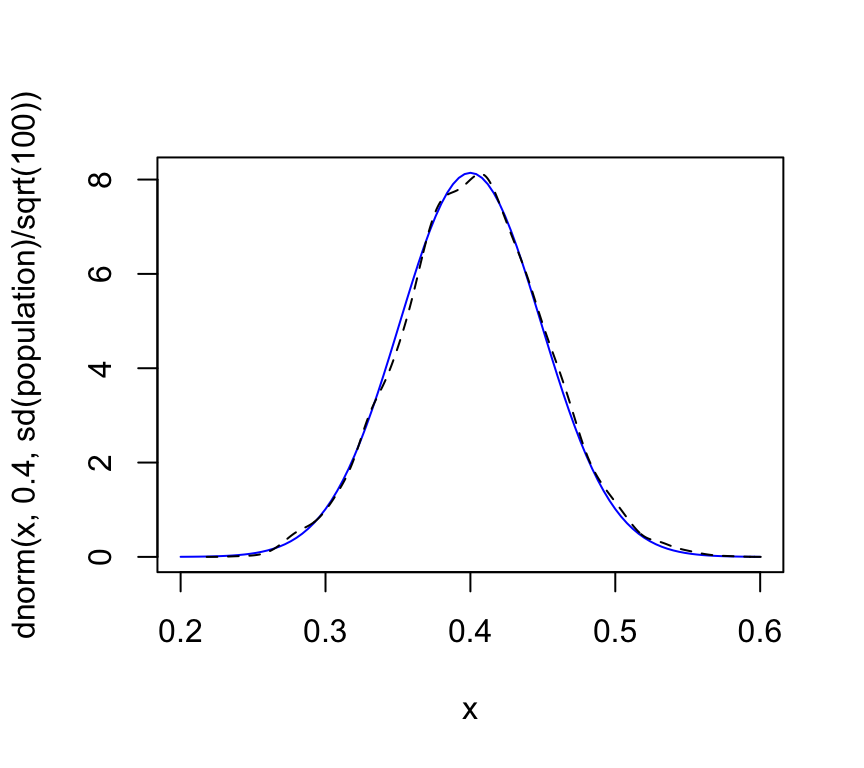
Se lanza al aire una moneda cargada 8 veces, de tal manera que la probabilidad de que aparezca cara es de 2/3, mientras que la probabilidad de que aparezca cruz es de 1/3. Determine la probabilidad de que en el ultimo lanzamiento aparezca cara.
#x: numero de repeticiones hasta el primer exito
repeticiones <- 7
probabilidadCara <- 2/3
# ajustar la p
#Resolucion
resultadoGeom <- dgeom(repeticiones, probabilidadCara)Calcular la probabilidad de que en el experimento anterior, aparezca cara entre el tiro 5 y 8:
# op1:
pgeom(repeticiones, probabilidadCara) - pgeom(repeticiones-4, probabilidadCara)## [1] 0.01219326# op2:
sum(dgeom(4:7, probabilidadCara))## [1] 0.01219326Supongamos que tenemos una moneda equilibrada (probabilidad de cara=cruz=0.5). Vamos a realizar 100 experimentos en donde cada experimento es “el número de veces que tengo que tirar la moneda hasta que salga una cara”.
# Un experimento concreto sería:
## (puede ejecutar varias veces la sig instrucción)
rgeom(1,0.5)## [1] 0# Vamos a generar los 100 experimentos:
nsample<-100
geom_samples <- rgeom(nsample, 0.5)
hist(geom_samples, col='light grey', border='grey', xlab=NULL,ylab=NULL,main=NULL)
par(new=T)
plot(density(geom_samples), col='blue', axes=F)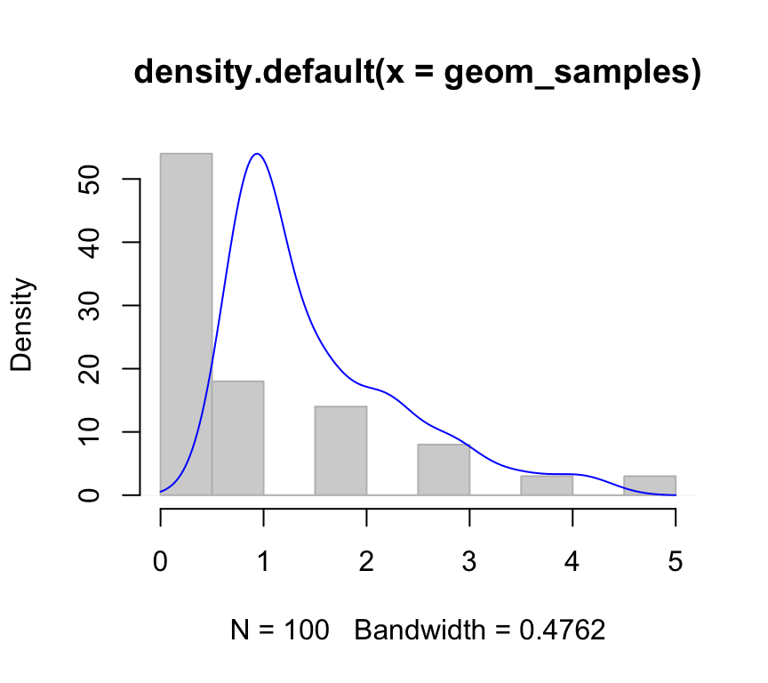
Se sabe que la probabilidad de que un niño expuesto a una enfermedad contagiosa contraiga la enfermedad es de 0.4. Calcula la probabilidad de que el décimo niño estudiado sea el tercero en contraer la enfermedad.
#x: numero de fallas hasta el r-esimo exito.
fallasBNeg <- 7
#size: numero de exitos (r)
exitosBNeg <- 3
probabilidadBNeg <- 0.4
#resolucion
resultadoBNeg <- dnbinom(fallasBNeg, exitosBNeg, probabilidadBNeg)El 60% de una gran cantidad de bujías viejas todavía se pueden usar. Se las puede probar individualmente. Sea Y el “número de bujías que se probarán para encontrar 5 en buen estado”. ¿P[Y<=10]?.
# op1:
sum(dnbinom(x=0:5,size=5,prob=0.6))## [1] 0.8337614# op2:
pnbinom(5, size=5, prob=0.6)## [1] 0.8337614Vamos a crear 3 conjuntos de pacientes:
diabeticos<-c("Pedro", "Jose", "Carolina", "Mariana", "Antonio", "Eduardo")
obesos<-c("Ricardo", "Jose", "Carolina", "Carmen", "Felipe", "Eduardo")
fumadores<-c("Juan", "Jose", "Carolina", "Mariana", "Carmen", "Bruno")
length(diabeticos)## [1] 6length(obesos)## [1] 6length(fumadores)## [1] 6Ejemplo de unión de dos conjuntos:
union(diabeticos,obesos)## [1] "Pedro" "Jose" "Carolina" "Mariana" "Antonio" "Eduardo" "Ricardo" "Carmen"
## [9] "Felipe"Ejemplo de intersección de dos conjuntos:
intersect(diabeticos,fumadores)## [1] "Jose" "Carolina" "Mariana"Porcentaje de elementos comunes:
length(intersect(diabeticos,obesos))/length(union(diabeticos,obesos))## [1] 0.3333333Pacientes diabéticos que no son obesos:
setdiff(diabeticos,obesos)## [1] "Pedro" "Mariana" "Antonio"Pacientes obesos que no son diabéticos:
setdiff(obesos,diabeticos)## [1] "Ricardo" "Carmen" "Felipe"Dibujamos un diagrama de Venn para dos conjuntos:
grid.newpage()
draw.pairwise.venn(length(diabeticos),
length(obesos),
length(intersect(diabeticos,obesos)),
category = c("diabeticos", "obesos"), lty = rep("blank", 2),
fill = c("light blue", "pink"), alpha = rep(0.5, 2), cat.pos = c(0, 0),
cat.dist = rep(0.025, 2))
## (polygon[GRID.polygon.1], polygon[GRID.polygon.2], polygon[GRID.polygon.3], polygon[GRID.polygon.4], text[GRID.text.5], text[GRID.text.6], text[GRID.text.7], text[GRID.text.8], text[GRID.text.9])Diagrama de Venn para tres conjuntos:
grid.newpage()
draw.triple.venn(area1 = length(diabeticos),
area2 = length(obesos),
area3 = length(fumadores),
n12 = length(intersect(diabeticos,obesos)),
n23 = length(intersect(obesos,fumadores)),
n13 = length(intersect(diabeticos,fumadores)),
n123 = length(intersect(intersect(diabeticos,obesos),fumadores)),
category = c("diabeticos", "obsesos", "fumadores"), lty = "blank",
fill = c("skyblue", "pink1", "mediumorchid"))## (polygon[GRID.polygon.10], polygon[GRID.polygon.11], polygon[GRID.polygon.12], polygon[GRID.polygon.13], polygon[GRID.polygon.14], polygon[GRID.polygon.15], text[GRID.text.16], text[GRID.text.17], text[GRID.text.18], text[GRID.text.19], text[GRID.text.20], text[GRID.text.21], text[GRID.text.22], text[GRID.text.23], text[GRID.text.24], text[GRID.text.25])Calculamos analíticamente las intersecciones de los tres conjuntos:
experimento<-list("diabeticos"= diabeticos,"obesos"= obesos,"fumadores"=fumadores)
intersecciones<-get.venn.partitions(experimento, keep.elements = T, force.unique = T)
View(intersecciones)Veamos un ejemplo con genes:
# generamos 1000 genes
gene_list = paste0("GENE", 1:1000)
# generamos tres conjuntos de 700 genes cada uno.
studies = list( S1=sample(gene_list, 700, replace = FALSE),
S2=sample(gene_list, 700, replace = FALSE),
S3=sample(gene_list, 700, replace = FALSE) )
ol = calculate.overlap(x = studies)
interseccionesGenes<-get.venn.partitions(studies, keep.elements = T, force.unique = T)
View(interseccionesGenes)
grid.newpage()
draw.triple.venn(area1 = length(studies$S1),
area2 = length(studies$S2),
area3 = length(studies$S3),
n12 = length(intersect(studies$S1,studies$S2)),
n23 = length(intersect(studies$S2,studies$S3)),
n13 = length(intersect(studies$S1,studies$S3)),
n123 = length(intersect(intersect(studies$S1,studies$S2),studies$S3)),
category = c("S1", "S2", "S3"), lty = "blank",
fill = c("skyblue", "pink1", "mediumorchid"))## (polygon[GRID.polygon.26], polygon[GRID.polygon.27], polygon[GRID.polygon.28], polygon[GRID.polygon.29], polygon[GRID.polygon.30], polygon[GRID.polygon.31], text[GRID.text.32], text[GRID.text.33], text[GRID.text.34], text[GRID.text.35], text[GRID.text.36], text[GRID.text.37], text[GRID.text.38], text[GRID.text.39], text[GRID.text.40], text[GRID.text.41])De cada 20 piezas fabricadas por una máquina, hay 2 que son defectuosas. Para realizar un control de calidad, se observan 15 elementos y se rechaza el lote si hay alguna que sea defectuoso. Vamos a calcular la probabilidad de que el lote no sea rechazado.
#x: cantidad de exitos
exitosHGeom <- 0
#m: numero de exitos en la poblacion
exitosEnPoblacion <- 2
#n: numero de fracasos en la poblacion
fallasHGeom <- 18
#k: tamaño de la muestra extraida
muestraHGeom <- 15
probabilidadHGeom <- dhyper(exitosHGeom, exitosEnPoblacion, fallasHGeom, muestraHGeom)
#Calcular en el experimento anterior, la probabilidad de que sea rechazado
probabilidadHGeomAcumulada <- phyper(exitosEnPoblacion, exitosEnPoblacion, fallasHGeom, muestraHGeom) - probabilidadHGeom#x: cantidad de exitos
xEjA <- 0
xEjC <- 10
lambda <- 4
#Resolucion
ejAPois <- dpois(xEjA, lambda*2)
ejCPois <- dpois(xEjC, lambda*3)
#ppois(q, lambda, lower.tail = TRUE, log.p = FALSE)
ejBPois <- ppois(1, lambda, lower.tail = FALSE)Ejercicio 2 - Guía 5
En una planta industrial el consumo mensual de combustible es una variable aleatoria distribuida normalmente con media 20000 litros y desvío estándar 2500 litros.
visualize.norm(stat = c(24000), mu = 20000, sd = 2500, section ="lower")visualize.norm(stat = c(18000), mu = 20000, sd = 2500, section ="upper")visualize.norm(stat = c(18000,24000), mu = 20000, sd = 2500, section = "bounded")Función de distribución normal estandarizada:
f <- function(x) {
1/(sqrt(2 * pi)) * exp(-0.5 * x^2)
}
x=seq(-5,5,by = 0.01)
plot(x,f(x), type="l", col="red")
Vamos a probar con tres valores reales nuestra función de distribución:
valores <- c(-1.96, 0, 1.96)
f(valores)## [1] 0.05844094 0.39894228 0.05844094# vamos a comparar estos valores con los valores calculados por dnorm():
f(valores) == dnorm(valores)## [1] TRUE TRUE TRUEVamos a hallar la probabilidad del 1er valor integrando la función de distribución:
# op1:
integrate(f,
lower = -Inf,
upper = -1.96)## 0.0249979 with absolute error < 1.9e-05# op2:
pnorm(-1.96)## [1] 0.0249979Otro ejemplo:
Dada la siguiente función definida para x>=0:
f <- function(x) {
1/(sqrt(2 * pi)) * exp(-0.5 * x^2)
}Nota: Resuelto al final del hands-on
Ejemplo con la distribución Gamma:
Primero vamos a definir la función de densidad de la distribución Gamma:
fgamma<-function(x,a,s) {1/(s^a*gamma(a))*x^(a-1)*exp(-x/s)}Gráfica de la distribución Gamma variando algunos de sus parámetros:
x=seq(0,20,by = 0.001)
plot(x,fgamma(x,1,2), xlim = c(0,20), ylim = c(0,0.5), col="red", type="l", ylab="")
lines(x,fgamma(x,2,2), xlim = c(0,20), col="green")
lines(x,fgamma(x,3,2), xlim = c(0,20), col="blue")
lines(x,fgamma(x,5,1), xlim = c(0,20), col="magenta")
lines(x,fgamma(x,9,0.5))Ahora supondremos una VA que sigue una distribución Gamma con a=9 y l=0.5, vamos a hallar P(X=5):
integrate(fgamma,0,5,9,0.5)## 0.6671803 with absolute error < 6.3e-09Confirmamos el valor utilizando la función de r:
pgamma(5,9,2)## [1] 0.6671803Tarea: 1) Hallar la esperenza y la varianza de dicha VA. 2) Mostrar con una simulación que la media de dicha VA tiende a "a*1/s" es decir 18.
Mostrar con una simulación que el porcentaje de datos entre 1 SD es aproximadamente 68%. O sea que el 68 % de los datos de una distribución normal están dentro de [μ-σ;μ+σ].
Nota: Resuelto al final del hands-on
Vamos a tomar una muestra aleatoria en una población normal cuda media (de la muestra) es μ=170 y desviación típica σ=12. No conocemos el tamaño de la población. Fijamos inicialmente un tamaño de muestra n=25, tomamos la muestra y calculamos su media:
n=25
muestra1=rnorm(n,170,12)
media1=mean(muestra1)
media1## [1] 168.8082En esta muestra hemos obtenido un valor medio muestral de 172.2. Si repetimos el proceso obtenemos otra media distinta:
muestra2=rnorm(n,170,12)
media2=mean(muestra2)
media2## [1] 166.6675Y si volvemos a repetir:
muestra3=rnorm(n,170,12)
media3=mean(muestra3)
media3## [1] 168.5224En este punto el lector habrá observado que cada vez que se toma una muestra se obtiene una media diferente. Como a priori es imposible predecir en cada muestreo cuál será el valor medio resultante, la media muestral es una variable aleatoria. El lector habrá observado también que las medias muestrales se parecen a la media de la población, μ=170. Cabe preguntarse entonces: ¿tenderá la media muestral a comportarse de esta manera en todas las muestras? ¿Cuánto llega a apartarse de la media de la población?
Para responder a estas preguntas podemos repetir el proceso anterior no tres, sino muchísimas más veces. En R esto es muy sencillo de hacer. Una forma muy eficiente de replicar muchas veces el proceso anterior consiste en encapsular el proceso de muestreo en una función que haremos depender del tamaño de la muestra:
mediaMuestral=function(n){
muestra=rnorm(n,170,12)
media=mean(muestra)
return(media)
}Cada vez que ejecutemos esta función estaremos eligiendo una muestra de tamaño n de esa población N(170,12) y calculando su media:
mediaMuestral(25)## [1] 174.2577mediaMuestral(25)## [1] 167.3962mediaMuestral(25)## [1] 173.7282Para repetir m veces el proceso de extraer una muestra de tamaño n y calcular su media podemos utilizar la función replicate():
m=10000
muchasMedias=replicate(m,mediaMuestral(25))La media y desviación típica de todas estas medias muestrales son:
mean(muchasMedias)## [1] 170.0018sd(muchasMedias)## [1] 2.415415Por último, representamos gráficamente la distribución de frecuencias de estas medias muestrales mediante un histograma, al que le superponemos una densidad normal:
hist(muchasMedias,xlab="Media muestral", ylab="Frecuencia", col="lightcyan",
xlim=c(160,180),freq=FALSE,ylim=c(0,0.75),
main="Histograma de las medias muestrales observadas\n en 10000 muestras de tamaño 25")
curve(dnorm(x,170,sd(muchasMedias)),xlim=c(160,180),col="blue",lwd=2,add=TRUE) A estas alturas, para el lector debe de haber quedado claro que la media muestral es una variable aleatoria, y que su distribución de probabilidad es muy parecida a la normal; además la media de todas las medias muestrales es casi idéntica a la media de la población.
¿Cuál es el efecto de aumentar el tamaño de la muestra? Podemos evaluarlo repitiendo el proceso anterior para n=50, n=100 y n=500 (en todos los casos presentaremos los gráficos en la misma escala para facilitar la comparación):
muchasMedias50=replicate(m,mediaMuestral(50))
muchasMedias100=replicate(m,mediaMuestral(100))
muchasMedias500=replicate(m,mediaMuestral(500))
mean(muchasMedias50); sd(muchasMedias50)## [1] 170.0362## [1] 1.692841mean(muchasMedias100); sd(muchasMedias100)## [1] 169.9984## [1] 1.20171mean(muchasMedias500); sd(muchasMedias500)## [1] 170.0096## [1] 0.5346144hist(muchasMedias50,xlab="Media muestral", ylab="Frecuencia", col="lightcyan",
xlim=c(160,180),freq=FALSE,ylim=c(0,0.75),
main="Histograma de las medias muestrales observadas\n en 10000 muestras de tamaño 50")
curve(dnorm(x,170,sd(muchasMedias50)),xlim=c(160,180),col="blue",lwd=2,add=TRUE)hist(muchasMedias100,xlab="Media muestral", ylab="Frecuencia", col="lightcyan",
xlim=c(160,180),freq=FALSE,ylim=c(0,0.75),
main="Histograma de las medias muestrales observadas\n en 10000 muestras de tamaño 100")
curve(dnorm(x,170,sd(muchasMedias100)),xlim=c(160,180),col="blue",lwd=2,add=TRUE)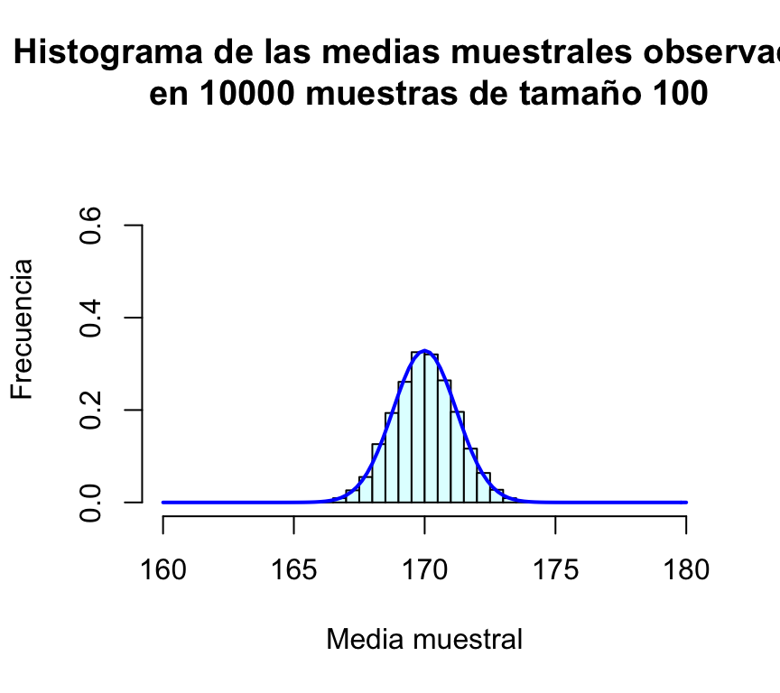
hist(muchasMedias500,xlab="Media muestral", ylab="Frecuencia", col="lightcyan",
xlim=c(160,180),freq=FALSE,ylim=c(0,0.75),
main="Histograma de las medias muestrales observadas\n en 10000 muestras de tamaño 500")
curve(dnorm(x,170,sd(muchasMedias500)),xlim=c(160,180),col="blue",lwd=2,add=TRUE,n=200)Resulta evidente en las gráficas, que el incremento del tamaño de la muestra tiene como consecuencia que las posibles medias muestrales se concentran más en torno a su media; en otras palabras, cuanto más grande sea la muestra, más probable es que la media de la muestra esté muy cerca de la media de la población. Puede comprobarse además que la desviación típica de las medias muestrales es en todos los casos un valor muy parecido a σ/√n=12/√n:
| Tamaño de muestra (n) | Desviación típica de las medias muestrales | σ/√n |
|---|---|---|
| 25 | 2.40882 | 2.4 |
| 50 | 1.69587 | 1.69706 |
| 100 | 1.18425 | 1.2 |
| 1000 | 0.53569 | 0.53666 |
Tras esta serie de simulaciones, el lector debe haber quedado bastante convencido de que la media muestral de variables N(μ,σ) es una variable aleatoria también normal de media μ y desviación típica σ/√n.
Ejercicio:
Hemos visto la media de variables normales es también normal. ¿Ocurrirá lo mismo si las variables que se promedian no son normales? Podemos aquí plantear el siguiente ejercicio, para que el lector “descubra” el teorema central del límite.
Nota: Resuelto al final del hands-on.
Vamos a definir 2 poblaciones: pobA y pobB. Ambas tienen 10.000 habitantes. La pobA sigue una distribución uniforme [0,1], mientras que la pobB sigue una distribución exponencial con alfa=10. Vamos a tomar muestras de 10 personas en ambas poblaciones y vamos a mostras que, en ambos casos, el histograma de las medias (muestrales) siguen una distribución normal:
# generamos los 10000 elementos de pobA:
runi<-runif(100000,0,1)
# extraemos 10 elementos al azar de la población. Y esta extracción la repetimos 1000 veces.
means<-NULL
for(i in 1:1000){
# calculo la media de los 10 elementos extraídos al azar de la pobA:
means<-c(means,mean(sample(runi,size = 10)))
}
# generamos los 10000 elementos de pobB:
rexpon<-rexp(100000,10)
# extraemos 10 elementos al azar de la población. Y esta extracción la repetimos 1000 veces.
means2<-NULL
for(i in 1:1000){
# calculo la media de los 10 elementos extraídos al azar de la pobB:
means2<-c(means2,mean(sample(rexpon,size = 10)))
}
# visualizo las 2 distribuciones poblacionales y las 2 distribuciones de las medias muestrales:
par(mfrow=c(2,2))
hist(runi, main = "Distribución uniforme")
plot(density(means), col='blue', xlab="", ylab="", main="", axes=F, add=T)
par(new=T)
hist(means, main="Distribución de las medias muestrales")
hist(rexpon, main="Distribución exponencial")
plot(density(means2), col='blue', axes=F, xlab="", ylab="", main="", add=T)
par(new=T)
hist(means2, main="Distribución de las medias muestrales")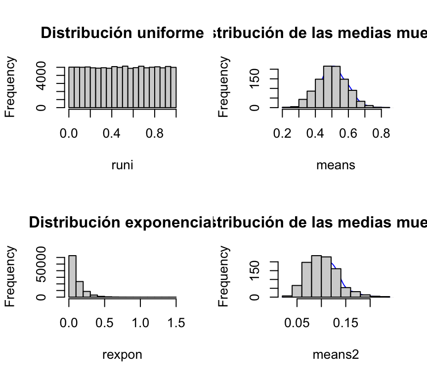
Ahora vamos a mostrar que la aproximación de las medias muestras de un experimento se asemeja a una distribución normal también cuando la distribución poblacional es binomial.
Vamos a simular 10000 habitantes de una población que sigue una B(10,0.4):
mysample<-NULL
for(m in 1:10000){
mysample<-c(mysample,rbinom(1,size=10,prob=0.4))
}
mupob<-mean(mysample)
sdpob<-sd(mysample)Vamos a repetir 20000 veces el experimento: vamos a tomar 10 elementos de la población, le vamos a sacar la media a esa muestra (de 10 els) y vamos a graficar la distribución de esas 20000 medias.
summeans<-NULL
for(k in 1:20000) {
mysubsample<-sample(mysample,10)
summeans<-c(summeans, mean(mysubsample))
}
par(mfrow=c(1,1))
plot(density(summeans), col='blue', axes=F, xlab="", ylab="", main="", add=T)## Warning in plot.window(...): "add" is not a graphical parameter## Warning in plot.xy(xy, type, ...): "add" is not a graphical parameter## Warning in title(...): "add" is not a graphical parameterpar(new=T)
hist(summeans, main = "Aproximación de la Binomial")El paquete stats de R (que se instala por defecto al instalar R, y se carga en memoria siempre que iniciamos sesión) implementa numerosas funciones para la realización de cálculos asociados a distintas distribuciones de probabilidad. Entre las utilizadas más comunmente podemos citar:
| Distribuciones Discretas | Distribuciones Continuas | |||
|---|---|---|---|---|
| Distribución | Nombre en R | Distribución | Nombre en R | |
| ——————- | ————- | — | ————— | ————- |
| Binomial | binom | Uniforme | unif | |
| Poisson | pois | Normal | norm | |
| Geométrica | geom | t Student | t | |
| Hipergeométrica | hyper | F Fisher | F | |
| Binomial Negativa | nbinom | Chi-Cuadrado | chisq | |
| Exponencial | exp | |||
| Gamma | gamma | |||
| Weibull | weibull | |||
| W de Wilcoxon | wilcox |
Mostrar con una simulación que el porcentaje de datos entre 1 SD es aproximadamente 68%. O sea que el 68 % de los datos de una distribución normal están dentro de [μ-σ;μ+σ].
#valores generados
propg <- rnorm(10000)
#estadísticos
n = length(propg)
mean = mean(propg)
sd = sd(propg)
#función para calcular proporción
proporcion <- function(nSD){
lo = mean - nSD*sd
hi = mean + nSD*sd
percent = sum(propg>=lo
& propg<=hi)/n *100
}
#cálculo de la proporción (en %) para 1 y 2 desviaciones estándares:
print(paste("Porcentaje de datos entre 1 SD es ",proporcion(1),"%", sep=""))## [1] "Porcentaje de datos entre 1 SD es 68.21%"Dada la siguiente función definida para x>=0:
f <- function(x) {
1/(sqrt(2 * pi)) * exp(-0.5 * x^2)
}Respuesta: tenemos que chequear que f(x)>0 y que la integral de f(x)=1.
f <- function(x){x/4*exp(-x^2/8)}ex <- function(x){x*f(x)}
expected_value <- integrate(ex, 0, Inf)$value
expected_value## [1] 2.506628ex2 <- function(x){x^2*f(x)}
integrate(ex2, 0, Inf)$value## [1] 8variance <- integrate(ex2, 0, Inf)$value - expected_value^2Un bolillero para un examen tiene 15 bolillas.
sample(1:15, 3) # se supone que son extracciones sin resposición. ## [1] 4 9 2## [1] 6649## [1] 6838## [1] 6581## [1] 6664Ejercicio:
Hemos visto la media de variables normales es también normal. ¿Ocurrirá lo mismo si las variables que se promedian no son normales? Podemos aquí plantear el siguiente ejercicio, para que el lector “descubra” el teorema central del límite.
n=25
muestraPois=rpois(n,lambda = 1.3)
mediaPois=mean(muestraPois)
mediaPois## [1] 1.88Obtuvimos como resultado mediaPois. Podemos repetir el experimento muchas veces y obtendremos valores distintos.
Una forma muy eficiente de replicar muchas veces el proceso anterior consiste en encapsular el proceso de muestreo en una función que haremos depender del tamaño de la muestra:
mediaMuestralPois=function(n){
muestra=rpois(n,lambda = 1.3)
media=mean(muestra)
return(media)
}Cada vez que ejecutemos esta función estaremos eligiendo una muestra de tamaño n de esa población Poiss(1.3) y calculando su media:
mediaMuestralPois(25)## [1] 1.64mediaMuestralPois(25)## [1] 1.32mediaMuestralPois(25)## [1] 1.48Para repetir m veces el proceso de extraer una muestra de tamaño n y calcular su media podemos utilizar la función replicate():
m=10000
muchasMediasPois=replicate(m,mediaMuestralPois(25))La media y desviación típica de todas estas medias muestrales son:
mean(muchasMediasPois)## [1] 1.298132sd(muchasMediasPois)## [1] 0.2291595Por último, representamos gráficamente la distribución de frecuencias de estas medias muestrales mediante un histograma, al que le superponemos una densidad normal:
hist(muchasMediasPois,xlab="Media muestral", ylab="Frecuencia", col="lightcyan",
xlim=c(0.5,2),freq=FALSE,ylim=c(0,2.5),
main="Histograma de las medias muestrales observadas\n en 10000 muestras de tamaño 25")
curve(dnorm(x,1.3,sd(muchasMediasPois)),xlim=c(0.5,2),col="blue",lwd=2,add=TRUE) Repetimos el proceso anterior para n=50, n=100 y n=500 (en todos los casos presentaremos los gráficos en la misma escala para facilitar la comparación):
muchasMedias50=replicate(m,mediaMuestralPois(50))
muchasMedias100=replicate(m,mediaMuestralPois(100))
muchasMedias500=replicate(m,mediaMuestralPois(500))
mean(muchasMedias50); sd(muchasMedias50)## [1] 1.301442## [1] 0.1586518mean(muchasMedias100); sd(muchasMedias100)## [1] 1.300779## [1] 0.1143771mean(muchasMedias500); sd(muchasMedias500)## [1] 1.3003## [1] 0.05174032hist(muchasMedias50,xlab="Media muestral", ylab="Frecuencia", col="lightcyan",
xlim=c(0.5,2),freq=FALSE,ylim=c(0,9),
main="Histograma de las medias muestrales observadas\n en 10000 muestras de tamaño 50")
curve(dnorm(x,1.3,sd(muchasMedias50)),xlim=c(0.5,2),col="blue",lwd=2,add=TRUE)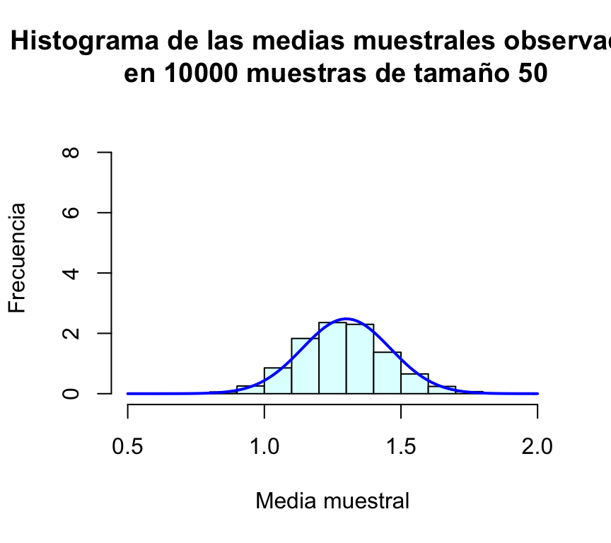
hist(muchasMedias100,xlab="Media muestral", ylab="Frecuencia", col="lightcyan",
xlim=c(0.5,2),freq=FALSE,ylim=c(0,9),
main="Histograma de las medias muestrales observadas\n en 10000 muestras de tamaño 100")
curve(dnorm(x,1.3,sd(muchasMedias100)),xlim=c(0.5,2),col="blue",lwd=2,add=TRUE)hist(muchasMedias500,xlab="Media muestral", ylab="Frecuencia", col="lightcyan",
xlim=c(0.5,2),freq=FALSE,ylim=c(0,9),
main="Histograma de las medias muestrales observadas\n en 10000 muestras de tamaño 500")
curve(dnorm(x,1.3,sd(muchasMedias500)),xlim=c(0.5,2),col="blue",lwd=2,add=TRUE,n=200)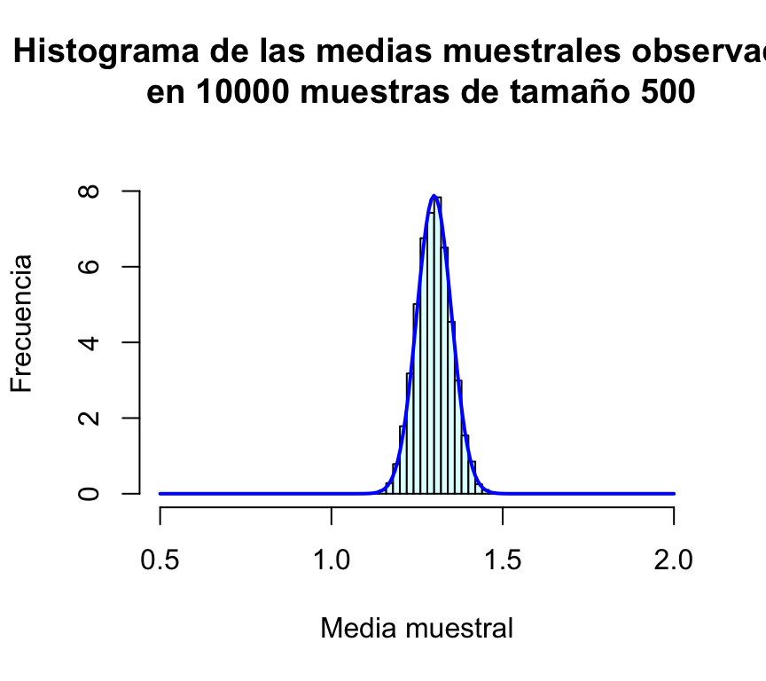
Fijamos inicialmente un tamaño de muestra n=25, tomamos la muestra y calculamos su media:
n=25
muestraExp=rexp(n, rate = 1.5)
mediaExp=mean(muestraExp)
mediaExp## [1] 0.9931689Obtuvimos como resultado mediaExp. Notar que la esperanza de la exponencial es 1/μ. Podemos repetir el experimento muchas veces y obtendremos valores distintos.
Una forma muy eficiente de replicar muchas veces el proceso anterior consiste en encapsular el proceso de muestreo en una función que haremos depender del tamaño de la muestra:
mediaMuestralExp=function(n){
muestra=rexp(n,rate = 1.5)
media=mean(muestra)
return(media)
}Cada vez que ejecutemos esta función estaremos eligiendo una muestra de tamaño n de esa población E(1.5) y calculando su media:
mediaMuestralExp(25)## [1] 0.7297273mediaMuestralExp(25)## [1] 0.6811721mediaMuestralExp(25)## [1] 0.6072632Para repetir m veces el proceso de extraer una muestra de tamaño n y calcular su media podemos utilizar la función replicate():
m=10000
muchasMediasExp=replicate(m,mediaMuestralExp(25))La media y desviación típica de todas estas medias muestrales son:
mean(muchasMediasExp)## [1] 0.6674992sd(muchasMediasExp)## [1] 0.1319331Por último, representamos gráficamente la distribución de frecuencias de estas medias muestrales mediante un histograma, al que le superponemos una densidad normal:
hist(muchasMediasExp,xlab="Media muestral", ylab="Frecuencia", col="lightcyan",
xlim=c(0.2,1.2),freq=FALSE,ylim=c(0,4),
main="Histograma de las medias muestrales observadas\n en 10000 muestras de tamaño 25")
curve(dnorm(x,1/1.5,sd(muchasMediasExp)),xlim=c(0.2,1.2),col="blue",lwd=2,add=TRUE) 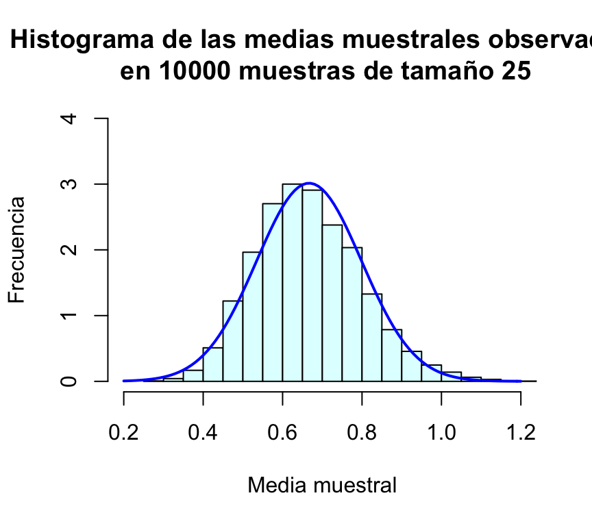
Repetimos el proceso anterior para n=50, n=100 y n=500 (en todos los casos presentaremos los gráficos en la misma escala para facilitar la comparación):
muchasMedias50=replicate(m,mediaMuestralExp(50))
muchasMedias100=replicate(m,mediaMuestralExp(100))
muchasMedias500=replicate(m,mediaMuestralExp(500))
mean(muchasMedias50); sd(muchasMedias50)## [1] 0.6674026## [1] 0.09457704mean(muchasMedias100); sd(muchasMedias100)## [1] 0.6671971## [1] 0.06582275mean(muchasMedias500); sd(muchasMedias500)## [1] 0.6672379## [1] 0.02964205hist(muchasMedias50,xlab="Media muestral", ylab="Frecuencia", col="lightcyan",
xlim=c(0.2,1.2),freq=FALSE,ylim=c(0,15),
main="Histograma de las medias muestrales observadas\n en 10000 muestras de tamaño 25")
curve(dnorm(x,1/1.5,sd(muchasMedias50)),xlim=c(0.2,1.2),col="blue",lwd=2,add=TRUE)hist(muchasMedias100,xlab="Media muestral", ylab="Frecuencia", col="lightcyan",
xlim=c(0.2,1.2),freq=FALSE,ylim=c(0,15),
main="Histograma de las medias muestrales observadas\n en 10000 muestras de tamaño 25")
curve(dnorm(x,1/1.5,sd(muchasMedias100)),xlim=c(0.2,1.2),col="blue",lwd=2,add=TRUE)hist(muchasMedias500,xlab="Media muestral", ylab="Frecuencia", col="lightcyan",
xlim=c(0.2,1.2),freq=FALSE,ylim=c(0,15),
main="Histograma de las medias muestrales observadas\n en 10000 muestras de tamaño 25")
curve(dnorm(x,1/1.5,sd(muchasMedias500)),xlim=c(0.2,1.2),col="blue",lwd=2,add=TRUE)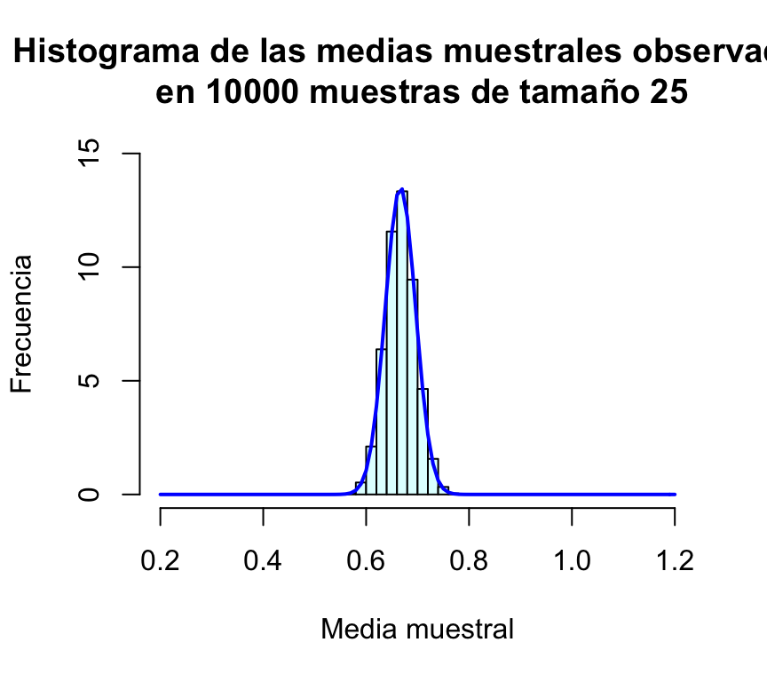
El procedimiento es idéntico a los anteior pero la generación aleatoria de los números de población se debe hacer con la función correspondiente.
G. Jay Kerns (Youngstown State University, Ohio) ha creado dos paquetes de R, prob, IPSUR que corresponden a dos libros de probabilidad y estadística de este autor (los libros pueden descargarse libremente aquí y aquí), y los paquetes se pueden descargar directamente de CRAN. Ambos libros se pueden utilizar para un curso de probabilidad y estadística de primero de carrera. Los paquetes citados, además de incluir versiones pdf de ambos libros, incluyen datos, funciones y ejemplos de utilización de R para el aprendizaje del cálculo de probabilidades y la estadística.
http://www.r-tutor.com/elementary-statistics/probability-distributions